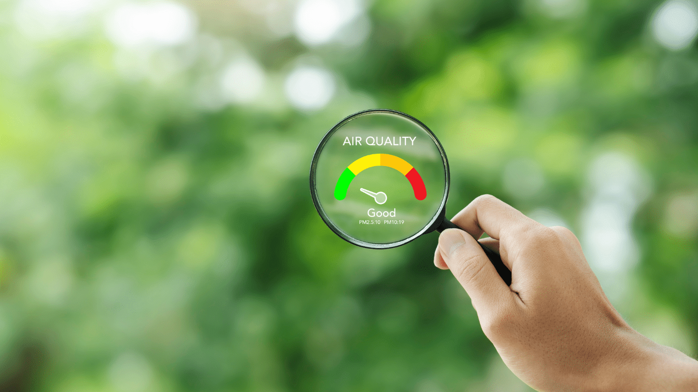
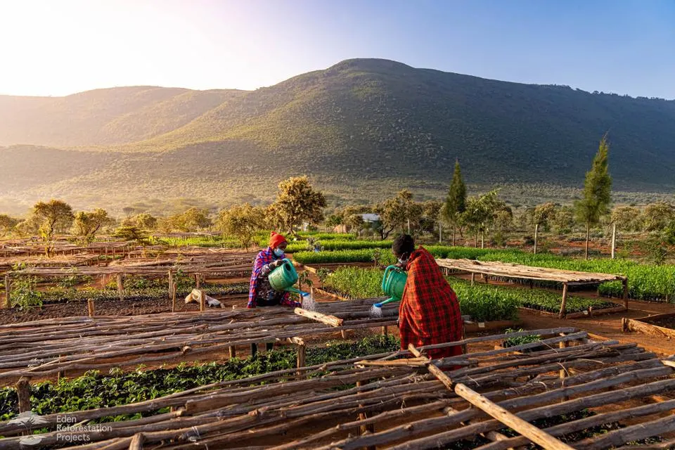

Community Voices
Real stories and experiences from communities affected by mining activities
"The mining activities have significantly impacted our water sources. We've had to adapt our farming practices and find new water collection points further from our village."
Photo
"Our community has been working with local authorities to monitor air quality and implement dust control measures. It's a slow process, but we're seeing some improvements."


Video
"The reforestation program has given us hope. We're seeing wildlife return to areas that were once barren, and it's creating new opportunities for eco-tourism."

Photo